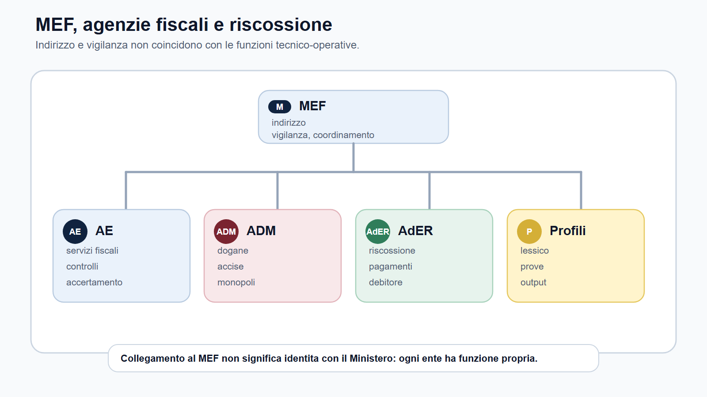
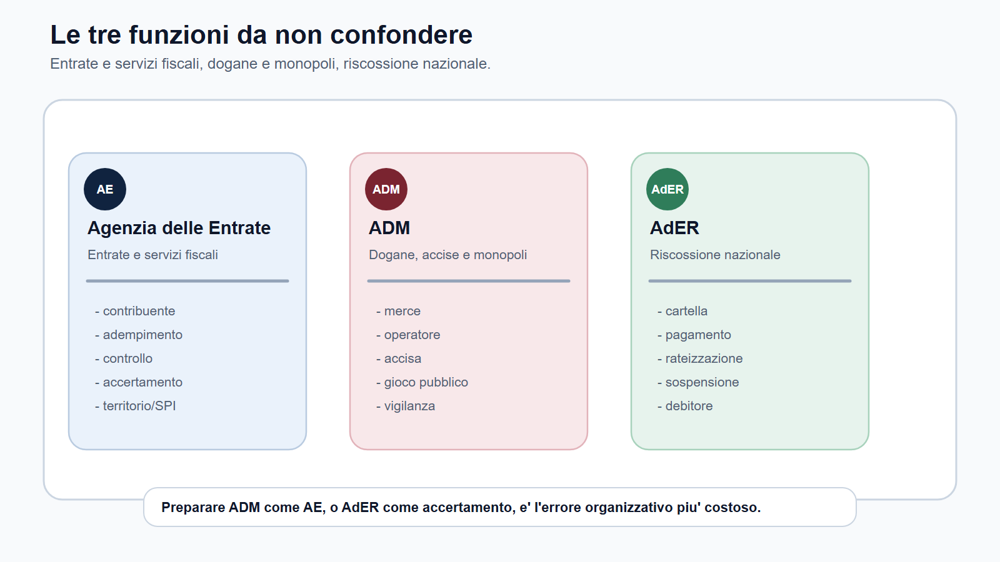
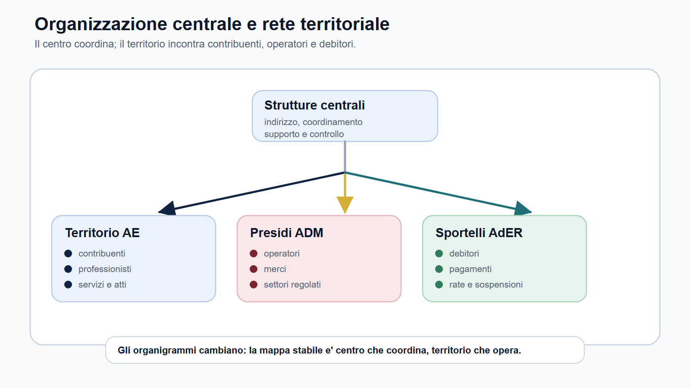
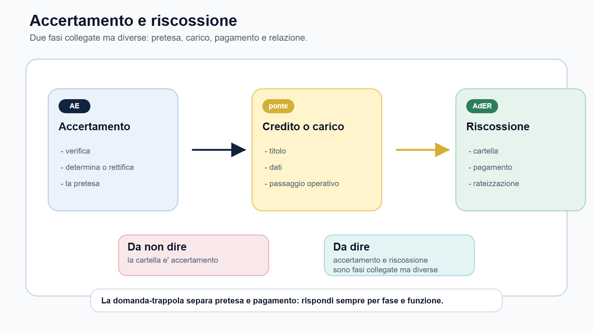

VOL-03 · Capitolo 18
M-FC02
Ordinamento e organizzazione
di AE, ADM e AdER
Un bando delle Agenzie fiscali non seleziona soltanto chi «conosce il fisco». Seleziona chi sa muoversi in un’organizzazione: uffici centrali e territoriali, servizi, controlli, atti, front-office, rapporto con il MEF. Memorizzare un organigramma non basta: gli organigrammi cambiano. Serve una mappa stabile di funzioni.
01 · Il problema in prova
Non tre capitoli dello stesso ufficio
L’errore più frequente è trattare accertamento, dogane e riscossione come se fossero tre sezioni della stessa struttura. Il candidato deve distinguere l’Agenzia delle Entrate da ADM e AdER, capire perché l’Agenzia non è un Ministero con un altro nome e collegare l’organizzazione al profilo del bando.
Che cos’è
L’ordinamento degli enti fiscali è la mappa di chi fa che cosa, con quale funzione, con quale rapporto con il MEF e con quali parole da usare in prova. Non è una lezione storica sul D.Lgs. 300/1999.
A che serve in prova
A rispondere in due minuti senza recitare l’organigramma. Un funzionario tributario, un profilo catastale, un funzionario ADM e un addetto alla riscossione richiedono risposte diverse anche quando condividono materie generali.
Non dire soltanto «sono enti collegati al MEF». Non recitare un organigramma minuto.
La risposta efficace spiega il modello, poi lo applica ai tre enti. Le parole del bando sono bussole: adempimento e accertamento per AE; dogane, accise e operatori per ADM; cartella, rateizzazione e debitore per AdER.
02 · BANDO
Cinque decisioni su questo capitolo
Il metodo non chiede di studiare tutta l’amministrazione finanziaria. Chiede di estrarre l’organizzazione che serve alla prova.
| Domanda organizzativa | Output | |
|---|---|---|
| B — Bando | Quale ente e quale profilo compaiono? | Scheda ente/profilo/funzione. |
| A — Aree | Entrate, dogane, monopoli o riscossione? | Mappa delle aree funzionali. |
| N — Nuclei | Quali nozioni organizzative padroneggiare? | Glossario MEF, agenzia, uffici, servizio, controllo. |
| D — Diario | Quali confusioni rischio di ripetere? | MEF/agenzia, AE/ADM, accertamento/riscossione. |
| O — Output | Che risposta devo saper produrre? | Orale da due minuti e tabella funzione/profilo. |
03 · Fonte
Il D.Lgs. 300/1999 come chiave, non come storia
Il D.Lgs. 30 luglio 1999, n. 300 è la fonte di riferimento per la riorganizzazione del Governo e il modello delle agenzie. Nel modulo M-FC02 vale per quattro idee, non per una ricostruzione enciclopedica dei Ministeri.
| Idea | Conseguenza in prova |
|---|---|
| AE e ADM hanno personalità giuridica di diritto pubblico e autonomie riconosciute. | Non sono direzioni interne del Ministero con un altro nome. |
| Autonomia non significa isolamento. | Operano nell’amministrazione finanziaria: indirizzo, vigilanza e approvazione degli atti generali nei casi previsti. |
| AdER ha natura diversa. | Ente pubblico economico istituito dal D.L. 193/2016, convertito dalla L. 225/2016, ente strumentale dell’Agenzia delle Entrate. |
| L’organizzazione si collega alla funzione. | La domanda verifica se distingui entrate, dogane e monopoli, riscossione: non una lista di uffici. |
04 · Modello
Ministero, agenzia, ente della riscossione
Il MEF è il riferimento istituzionale dell’area economico-finanziaria. Esprime indirizzo, vigilanza e coordinamento. Le agenzie svolgono funzioni amministrative, tecniche e operative nei settori attribuiti. Collegamento istituzionale non significa immedesimazione organizzativa.
Chi esercita l’accertamento tributario? Non «il MEF» in astratto: l’Agenzia delle Entrate, nei limiti del quadro normativo. Dogane e accise: ADM. Riscossione nazionale: AdER. L’Agenzia delle Entrate esercita indirizzo operativo e controllo su AdER, senza sovrapporre le funzioni.
Indirizzo e vigilanza del MEF non coincidono con le funzioni tecnico-operative.

05 · Tre funzioni
Entrate, dogane, riscossione
La tabella fissa il nucleo. Non sostituisce i capitoli specialistici successivi. Serve a non sbagliare l’ingresso.

AE, ADM e AdER hanno lessici e prove operative diverse.
06 · Lessico
Funzione guida e parole da usare
| Ente | Funzione guida | Lessico in prova | Rischio tipico |
|---|---|---|---|
| Agenzia delle Entrate | Entrate tributarie, servizi fiscali, accertamento, territorio/SPI. | Contribuente, adempimento, controllo, accertamento, servizi, catasto, pubblicità immobiliare. | Ridurre tutto a «diritto tributario» senza funzione amministrativa. |
| ADM | Dogane, accise, giochi, monopoli, controlli su flussi e operatori. | Merce, dichiarazione, operatore economico, accisa, gioco pubblico, monopolio, vigilanza. | Preparare ADM come se fosse AE. |
| AdER | Riscossione nazionale e rapporto con il contribuente-debitore. | Cartella, ruolo, pagamento, rateizzazione, sospensione, debitore, front-office. | Confondere riscossione e accertamento. |
Dire solo «si occupa di tributi» per ADM. La risposta è debole se non mostra la distinzione tra tributi interni, dogane, accise, giochi e monopoli.
07 · AE
Servizi, non solo evasione
L’Agenzia delle Entrate va presentata come amministrazione fiscale: entrate, servizi ai contribuenti, compliance, adempimenti, controlli e accertamento. Molti candidati parlano solo di evasione. Nei profili AE il lavoro può riguardare informazione, assistenza, dichiarazioni, istanze, canali digitali e trattamento di dati.
07 · Territorio
Catasto e pubblicità immobiliare
Per un profilo territorio/SPI il lessico immobiliare non è accessorio: catasto, cartografia, estimo, mercato immobiliare, pubblicità. Se il bando lo pone al centro, cambia la preparazione. Tre livelli: quadro organizzativo, funzione amministrativa, uso concorsuale.
08 · ADM e AdER
Due baricentri da non appiattire
ADM richiede un cambio di lingua: flussi, merci, prodotti soggetti ad accisa, gioco pubblico e monopoli. AdER sposta il centro dalla fase impositiva alla riscossione. Le due fasi sono collegate, ma non sono la stessa cosa.
ADM
L’agenzia vigila, controlla, autorizza e presidia flussi regolati. Il D.Lgs. 300/1999 è la cornice; il glossario specialistico decide il punteggio. Senza lessico, si risponde con categorie generiche a domande tecniche.
AdER
Accertamento: verifica e determinazione della pretesa. Riscossione: gestione del credito da portare a pagamento. Cartella, rateizzazione, sospensione, documentazione e canali. Il rischio è studiare AdER come appendice dell’AE.
Una riga dedicata: «Sto confondendo accertamento e riscossione?». Se la risposta è sì, torna alla mappa funzionale.
09 · Rete
Centro che coordina, territorio che incontra
Le strutture centrali indirizzano, coordinano, supportano e controllano. Le strutture territoriali sono il punto in cui l’azione incontra contribuenti, operatori, imprese, utenti e enti creditori. Non serve memorizzare ogni ufficio aggiornato, salvo che il bando lo richieda. Serve la logica.
Quiz
La domanda riguarda l’assetto istituzionale o l’attività dell’ufficio?
Orale
Risposta non piatta: il centro orienta, il territorio gestisce attività e servizi secondo le competenze previste.
Caso
Dove nasce il problema: sportello, controllo, pagamento, canale telematico?
Il centro coordina; il territorio incontra contribuenti, operatori e debitori.

10 · Organi
Fonti che rendono leggibile l’ente
La conoscenza dell’organizzazione non coincide con la memorizzazione dell’organigramma. Legge, statuto, regolamento di amministrazione, atti organizzativi, PIAO e amministrazione trasparente hanno funzioni diverse. Gli assetti sono mobili: si memorizza il modello, si verificano nomi e regolamenti quando esce il bando.
| Fonte | Che cosa fa |
|---|---|
| Legge istitutiva | Definisce il quadro. |
| Statuto e regolamenti | Disciplinano organi e funzionamento. |
| Atti organizzativi | Distribuiscono competenze e responsabilità. |
| Documenti di programmazione | Collegano struttura, obiettivi e risorse. |
Per AE e ADM: Direttore e Comitato di gestione. Per AdER: Direttore, Comitato di gestione e Collegio dei revisori. Il Direttore dell’ente coincide con il Direttore dell’Agenzia delle Entrate: il collegamento è visibile, la natura giuridica resta distinta. Il portale ADM registra un regolamento aggiornato nel 2026: verifica prima della prova.
11 · Distinzione
Accertamento e riscossione, due fasi
Ogni nozione organizzativa deve diventare una frase funzionale. Se non sai completarla, hai studiato nomi, non funzioni.

Dalla pretesa al pagamento: due fasi collegate, non intercambiabili.
12 · Caso guidato
Sara corregge il piano, non lo allunga
Sara prepara nello stesso mese un profilo giuridico-tributario AE e un concorso ADM su dogane, accise e monopoli. All’inizio usa lo stesso schema: D.Lgs. 300/1999, amministrativo, impiego, tributario generale. Il piano sembra ordinato, ma cancella la differenza tra gli enti.
| AE | ADM | |
|---|---|---|
| Funzione | Entrate e servizi fiscali. | Dogane, accise, monopoli. |
| Parole obbligatorie | Contribuente, adempimento, controllo, accertamento, servizi. | Merce, dichiarazione, operatore economico, accisa, vigilanza. |
| Primo output | Orale su AE più mappa adempimento-controllo-accertamento. | Glossario ADM con esempi di domanda. |
Sara non ha studiato di più. Ha studiato meglio. Il D.Lgs. 300/1999 è la cornice; la funzione dell’ente decide la preparazione.
13 · Verifica
Due domande da saper spiegare
Perché distinguere l’organizzazione di AE da ADM e AdER?
Perché la struttura dell’ente è collegata alla funzione del profilo. AE: entrate, servizi, controlli, accertamento e, per alcuni profili, catasto e pubblicità immobiliare. ADM: dogane, accise, giochi, monopoli. AdER: riscossione e contribuente-debitore. Senza distinzione si preparano materie comuni senza il lessico specialistico.
Le Agenzie fiscali sono semplici uffici del MEF?
No. Il MEF è il riferimento dell’area economico-finanziaria e svolge indirizzo e vigilanza. Le agenzie hanno funzioni tecnico-operative e autonomia nei limiti delle fonti. Dire che sono «semplici uffici del Ministero» appiattisce il modello e non spiega i profili specialistici. Collegamento non è identità.
14 · Come lo chiede
Quattro modi della commissione
La qualità della risposta dipende dalla capacità di distinguere fonte, ente, funzione, ufficio, utente, atto e output, non dalla sua lunghezza.
Definitorio
«Che cosa sono le agenzie fiscali?». Risposta breve su D.Lgs. 300/1999, autonomia e MEF.
Comparativo
«Differenza tra AE, ADM e AdER?». Mappa funzioni: entrate, dogane/monopoli, riscossione.
Applicativo
«Perché un profilo ADM non si prepara come AE?». Lessico e materie specialistiche diverse.
Situazionale
Richiesta allo sportello: ordine, competenza, ruolo, canali ufficiali.
Prima della prova verifica statuto, regolamento di amministrazione e amministrazione trasparente. Non inventare numeri di uffici, direzioni o personale.
15 · Da tenere ferme
Cinque regole, con il perché
1. Il D.Lgs. 300/1999 è la fonte di base per inquadrare il modello delle agenzie.
2. Le agenzie operano con autonomia, ma nel perimetro di indirizzo e vigilanza del MEF.
3. Agenzia delle Entrate, ADM e AdER non svolgono la stessa funzione.
4. AE richiama entrate, servizi, accertamento e territorio; ADM dogane, accise, giochi e monopoli; AdER riscossione.
5. Nei concorsi l’organizzazione si studia come mappa funzionale, non come elenco di uffici.
16 · Mini-esercizio
Dieci righe che non valgono per tutti
Compila per il bando che stai preparando, poi scrivi al massimo dieci righe: inquadra l’ente e spiega perché la sua organizzazione incide sul piano di studio. Se la risposta potrebbe valere identica per AE, ADM e AdER, è troppo generica.
| Domanda | Deve risultare |
|---|---|
| Ente e funzione principale | Entrate/servizi, dogane/monopoli, riscossione o territorio/SPI. |
| Collegamento con il MEF in una frase | Indirizzo e vigilanza, non identità. |
| Tre parole organizzative all’orale | Prese dal lessico dell’ente, non da uno slogan unico. |
| Confusione da evitare | MEF/agenzia, AE/ADM, accertamento/riscossione. |
Prossimo capitolo
Diritto tributario e teoria dell’imposta
L’ente è mappato. Ora la grammatica della pretesa: tributo, presupposto, soggetto passivo, base imponibile, aliquota. Senza questa sequenza, accertamento e riscossione restano parole vuote.